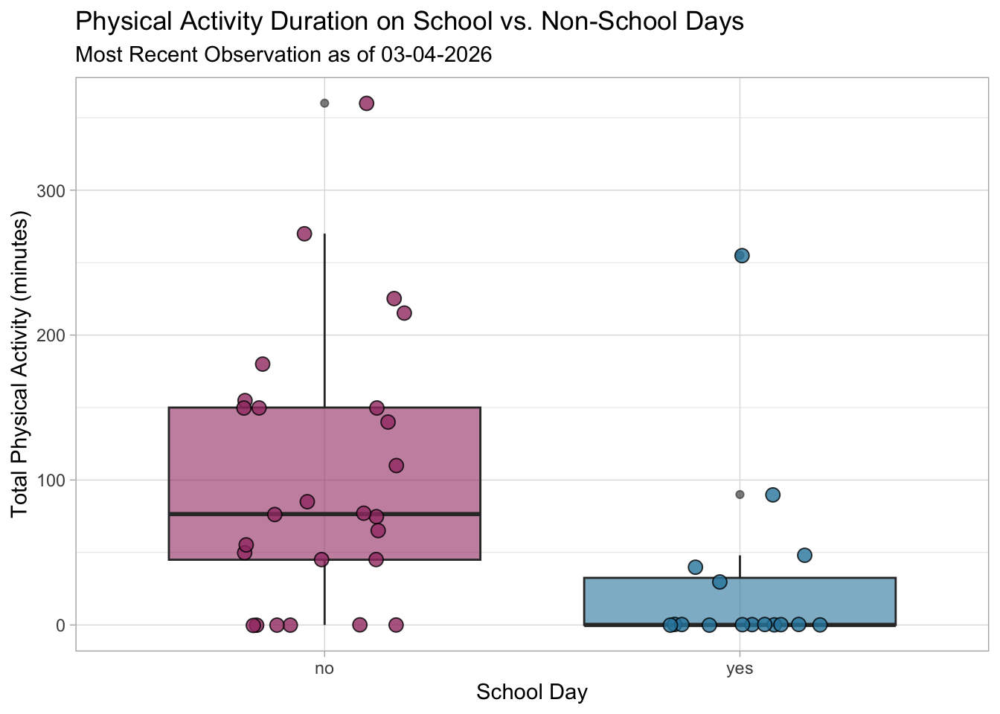
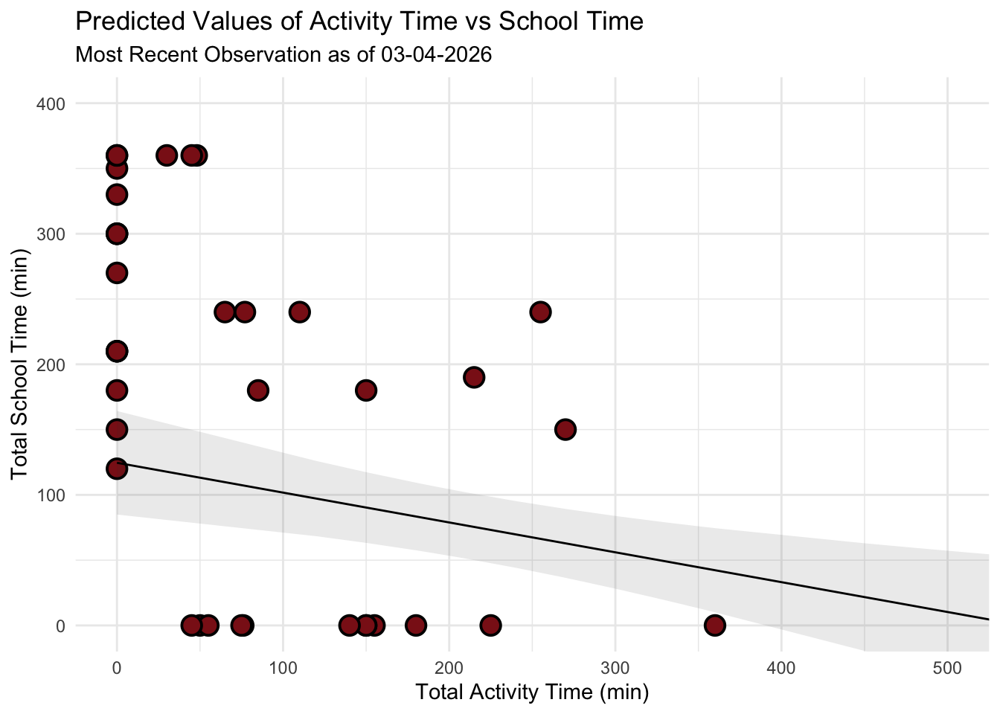
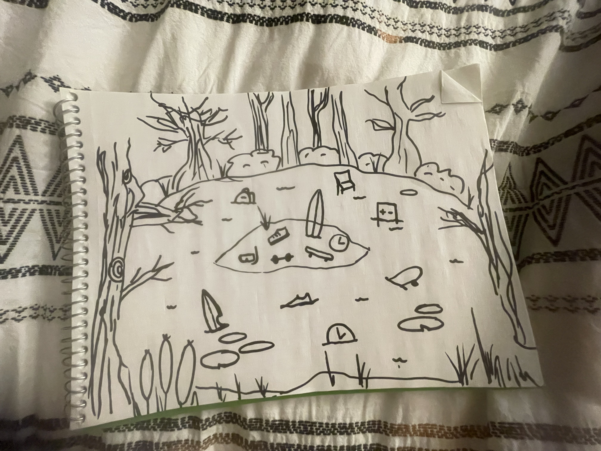
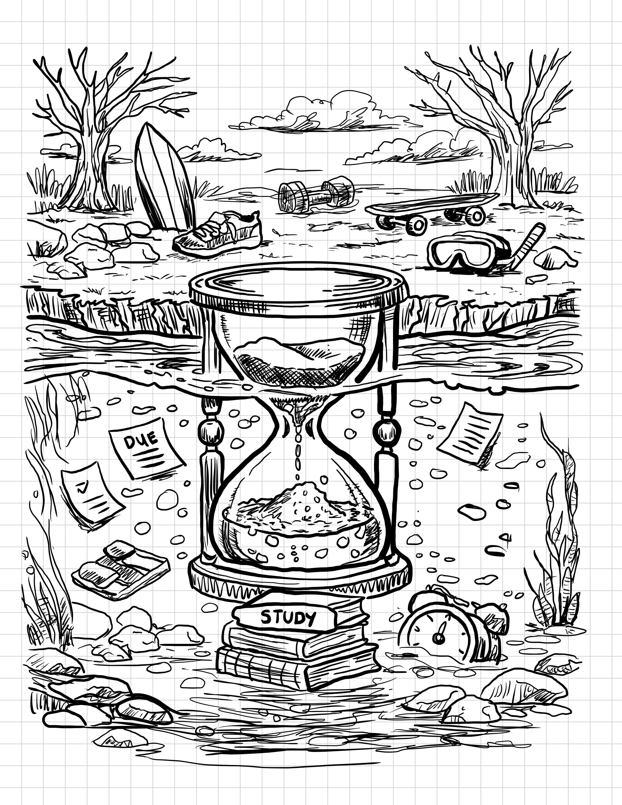
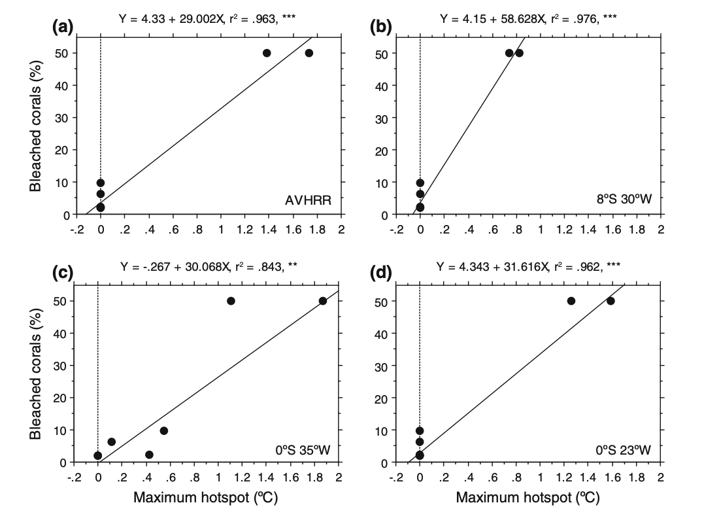

# Load in packages
library(tidyverse) # general use
library(here) # managing file paths relative to project root
library(janitor) # cleaning data frames
library(readxl) # importing data from excel files (.xls or .xlsx)
library(ggeffects) # generating model predictions
library(gtsummary) # generating summary tables for models
library(MuMIn) # model selection and model inference
library(broom.helpers) # tidying and labeling model outputs
# Read in data objects
salinity <- read_csv(here("data", "salinity-pickleweed.csv")) |>
clean_names() |> # Store salinity data
rename(salinity_mscm = salinity_m_s_cm)
# read in my personal data and label it as an object called "my_data"
my_data <- read_csv(here("data", "my_data_hw3.csv")) |>
clean_names()ENVS-193DS_homework-03
Set Up
Problem 1. Slough soil salinity
You are working at a restoration site where you are managing planting of California pickleweed (Salicornia virginica) along a brackish slough (i.e. there is a mixture of fresh water and salt water).
You decide to measure plant growth for individual pickleweed plants by plucking an individual out of the ground and measuring the biomass (in grams). You also measure soil salinity (as electrical conductivity in units of millisiemens per centimeter, or (mS/cm) at the location in which the individual was growing. Admittedly, this isn’t a perfect study, but it’s what you can do with the time and resources you have!
a. An appropriate test
To determine the strength of the relationship between soil salinity (mScm) and California pickleweed biomass (g), the two appropriate tests are Pearson’s (\(r\)) correlation and Spearman’s (\(\rho\)) rank correlation. Pearson’s correlation is a parametric test that measures the strength and direction of the relationship between variables (biomass and salinity). Spearman’s rank correlation is a non-parametric version, and unlike Spearman’s, does not depend on the assumption that the data is normally distributed or continuous. The test measures the monotonic relationship where the data is ranked from smallest to largest and correlation is calculated based on the ranked numbers rather than the actual measurements.
b. Create a visualization
Create a visualization that would be appropriate for showing the relationship between soil salinity (in mS/cm) and California pickleweed biomass (in g).
ggplot(data = salinity,
aes(x = salinity_mscm,
y = pickleweed)) +
geom_point(color = "darkgreen",
alpha = 0.6) +
labs(x = "Soil salinity (mS/cm)",
y = "Pickleweed biomass (g)",
title = "As Salinity Increases, Pickleweed Biomass also Increases") +
theme_bw()
c. Check your assumptions and run your test
1. Check your assumptions
I can assume that these are all independent observations taken at separate locations. I can also assume that the there is a linear relationship between response and predictor variables based on the data visualization above, which has a general trend showing that a higher soil salinity corresponds to a higher picklweed biomass.
# soil salinity (mScn) as a function of plant biomass (g)
salinity_model <- lm( # model object using linear model
pickleweed ~ salinity_mscm, # formula (response ~ predictor)
data = salinity # data frame
)# base R residuals
par(mfrow = c(2, 2)) # display plots in 2x2 grid
plot(salinity_model) # plotting residuals of model object 
The diagnostic plots show that the residualas have a constant variance (homoscedastic) accross the range of fitted values according to the Residuals vs Fitted and Scale-Location plots as they are evenly and randomly distributed. The residuals (errors) seem to be normally distributed according to the QQ Residuals plot as the data more or less follows a straight line. According to the Residuals vs Leverage plot there are no major outliers that might influence model estimates of slope or y-intercept.
2. Run your test
# more information about the model coefficients (slope and intercept)
summary(salinity_model)
Call:
lm(formula = pickleweed ~ salinity_mscm, data = salinity)
Residuals:
Min 1Q Median 3Q Max
-12.499 -5.819 -1.726 4.794 21.765
Coefficients:
Estimate Std. Error t value Pr(>|t|)
(Intercept) 13.0895 4.0350 3.244 0.00389 **
salinity_mscm 2.0832 0.7188 2.898 0.00860 **
---
Signif. codes: 0 '***' 0.001 '**' 0.01 '*' 0.05 '.' 0.1 ' ' 1
Residual standard error: 9.144 on 21 degrees of freedom
Multiple R-squared: 0.2857, Adjusted R-squared: 0.2517
F-statistic: 8.398 on 1 and 21 DF, p-value: 0.008605For each one unit increase in salinity (mScm) there is an increase in biomass of 2.08 + 0.72 grams
salinity_preds <- ggpredict( # create prediction object
salinity_model, # model object
terms = "salinity_mscm") # predictor variable
# display the predictions
print(salinity_preds, n = Inf) # Predicted values of pickleweed
salinity_mscm | Predicted | 95% CI
----------------------------------------
0 | 13.09 | 4.70, 21.48
1 | 15.17 | 8.06, 22.28
2 | 17.26 | 11.33, 23.18
3 | 19.34 | 14.42, 24.26
4 | 21.42 | 17.21, 25.63
5 | 23.51 | 19.54, 27.47
6 | 25.59 | 21.32, 29.85
7 | 27.67 | 22.66, 32.69
8 | 29.75 | 23.71, 35.80
9 | 31.84 | 24.60, 39.08
10 | 33.92 | 25.39, 42.45cor.test(salinity$pickleweed, salinity$salinity_mscm,
method = "pearson")
Pearson's product-moment correlation
data: salinity$pickleweed and salinity$salinity_mscm
t = 2.8979, df = 21, p-value = 0.008605
alternative hypothesis: true correlation is not equal to 0
95 percent confidence interval:
0.1568265 0.7757682
sample estimates:
cor
0.5344778 I evaluated the assumptions for the Pearson’s r correlation test, specifically for a linear relationship between soil salinity and pickleweed biomass variables, continuous variables, normally distributed data, and independent observations. I checked these assumptions by inspecting the original data visualization for a linear trend and to assess normality, confirming that both variables were measured on a continuous numeric scale, and ensuring the sampling design produced independent measurements. All of the assumptions are met, as my visual checks showed that the data is linear and normally distributed, the data is continuous, and the measurments are all independent.
d. Results communication
To evaluate the strength and direction of the relationship between soil salinity (mS/cm) and California pickleweed biomass (g), I used a Pearson’s (\(r\)) correlation test. This test was chosen because both variables are continuous, a visual inspection of the scatterplot confirmed a linear relationship without significant outliers, and the data is also normally distributed.
We found a moderate (Pearson’s r = 0.53) relationship between soil salinity and California pickleweed biomass (g), indicating that as soil salinity increases, there is a corresponding increase in pickleweed biomass. (Pearson’s r = 0.53, t(21) = 2.90, p > 0.001, \(\alpha\) = 0.05)
From our model coefficient estimates, we found that for each one unit increase in salinity (mScm) there is an increase in biomass of 2.08 ± 0.72 grams, which suggests that the growth of California pickleweed is positively associated with higher salt concentrations in the soil within the observed range.
e. Test implications
You’re working on a team of people at this restoration site who are also concerned about pickleweed planting. In 2-3 sentences, write what you would communicate to them about the results of this test and what it means for pickleweed planting success at your site.
Our data shows a moderate positive correlation between soil salinity and California pickleweed biomass, meaning that higher soil salt levels at our site actually promote more plant growth. Based on these results, we should prioritize restoration efforts in saltier patches to maximize planting success and biomass establishment. This allows us to use soil salinity as a key metric for identifying the most suitable locations for planting.
f. Double check your own work.
cor.test(salinity$pickleweed, salinity$salinity_mscm,
method = "spearman")
Spearman's rank correlation rho
data: salinity$pickleweed and salinity$salinity_mscm
S = 824, p-value = 0.003426
alternative hypothesis: true rho is not equal to 0
sample estimates:
rho
0.5928854 Both the Pearson’s \(r\) (\(r = 0.53, p = 0.009\)) and the Spearman’s \(\rho\) (\(\rho = 0.59, p = 0.003\)) would have led to the same decision to reject the null hypothesis, as both p-values are well below the \(\alpha\) = 0.05 threshold. While both tests confirm a significant positive relationship between soil salinity and pickleweed biomass, the Spearman’s test yields a slightly stronger correlation coefficient and a higher level of significance, but in general they represent the same relationship. This suggests that while the relationship is linear enough for Pearson’s, the monotonic (rank-order) relationship between salinity and biomass is even more consistent across the data set.
Problem 2. Personal data
a. Updating your visualizations
Visualization 1. Physical activity on school vs. non-school days
ggplot(my_data, # start with my data frame
aes(x = `on_campus_class`, # x-axis is school day (yes/no) -> categorical predictor
y = `total_physical_activity_min`, fill = `on_campus_class`)) + # y-axis is total physical activity -> response variable
geom_boxplot(alpha = 0.6) + # make a boxplot,
geom_jitter(width = 0.2, # make a jitter
size = 3,
alpha = 0.8,
shape = 21,
color = "black") +
labs( # change the text for x and y axis and the title
x = "School Day",
y = "Total Physical Activity (minutes)",
title = "Physical Activity Duration on School vs. Non-School Days",
subtitle = "Most Recent Observation as of 03-04-2026"
) +
scale_fill_manual(values = c("yes" = "#2E86AB", "no" = "#A23B72")) + # Customize the colors
theme_light() + # Different theme from default
theme(legend.position = "none") # Remove legend since x-axis already shows the categories
Visualization 2. Linear regression (new)
# creating a new object called data_clean from the my_datadata frame
data_clean <- my_data |>
# cleaning column names
clean_names() |>
# calculate total school time (class + work)
mutate(total_school_time = `time_spent_in_class_min` + `time_spent_on_work_min`) |>
# selected the comlumns of interest
select(total_school_time, total_physical_activity_min) |>
# renaming the activity time for clarity
rename(total_activity_time = total_physical_activity_min)# base layer: ggplot
ggplot(data = data_clean, # starting with clean data frame
aes(x = total_activity_time, # xaxis is acticity time (response)
y = total_school_time)) + # yaxis is change in school time (predioctor)
# first layer: points to represent individual days of activity
geom_point(size = 4,
stroke = 1,
fill = "firebrick4",
shape = 21)
activity_model <- lm( # create the linear model object
total_activity_time ~ total_school_time, # formula: response variable ~ predictor variable
data = data_clean # data: clean_data frame
)par(mfrow = c(2, 2)) # displaying diagnostic plots in 2x2 grid
plot(activity_model) # plotting diagnostics
# more information about the model
summary(activity_model)
Call:
lm(formula = total_activity_time ~ total_school_time, data = data_clean)
Residuals:
Min 1Q Median 3Q Max
-97.16 -56.01 -13.57 29.16 235.41
Coefficients:
Estimate Std. Error t value Pr(>|t|)
(Intercept) 124.59211 19.62437 6.349 1.53e-07 ***
total_school_time -0.22862 0.06927 -3.300 0.00204 **
---
Signif. codes: 0 '***' 0.001 '**' 0.01 '*' 0.05 '.' 0.1 ' ' 1
Residual standard error: 81.3 on 40 degrees of freedom
Multiple R-squared: 0.214, Adjusted R-squared: 0.1944
F-statistic: 10.89 on 1 and 40 DF, p-value: 0.002037# creating a new object called activity_preds
activity_preds <- ggpredict(
activity_model, # model object
terms = "total_school_time" # predictor (in quotation marks)
)
# display the predictions
print(activity_preds, n = Inf)# Predicted values of total_activity_time
total_school_time | Predicted | 95% CI
-----------------------------------------------
0 | 124.59 | 84.93, 164.25
120 | 97.16 | 68.34, 125.98
150 | 90.30 | 63.22, 117.37
180 | 83.44 | 57.54, 109.34
190 | 81.15 | 55.50, 106.81
210 | 76.58 | 51.20, 101.96
240 | 69.72 | 44.18, 95.27
270 | 62.86 | 36.48, 89.25
300 | 56.01 | 28.17, 83.85
330 | 49.15 | 19.33, 78.97
350 | 44.58 | 13.19, 75.96
360 | 42.29 | 10.06, 74.52
450 | 21.71 | -19.51, 62.93
480 | 14.85 | -29.75, 59.46
510 | 8.00 | -40.13, 56.12
540 | 1.14 | -50.60, 52.88
780 | -53.73 | -136.42, 28.95# base layer: ggplot
# using clean data frame
ggplot(data = data_clean,
aes(x = total_activity_time, # xaxis is acticity time (response)
y = total_school_time)) + # yaxis is change in school time (predioctor)
# first layer: points representing activities
geom_point(size = 4,
stroke = 1,
fill = "firebrick4",
shape = 21) +
# second layer: ribbon representing confidence interval
# using predictions data frame
geom_ribbon(data = activity_preds,
aes(x = x, # described by column x
y = predicted,
ymin = conf.low, # lower bound
ymax = conf.high), # upper bound
alpha = 0.1) +
# third layer: line representing model predictions
# using predictions data frame
geom_line(data = activity_preds,
aes(x = x,
y = predicted)) +
# axis labels
labs(x = "Total Activity Time (min)",
y = "Total School Time (min)",
title = "Predicted Values of Activity Time vs School Time",
subtitle = "Most Recent Observation as of 03-04-2026"
) +
# better framing for the data
coord_cartesian(xlim = c(0, 500), ylim = c(0, 400)) +
# theme
theme_minimal()
b. Captions
Figure 1: Comparison of Activity Duration by School Day Status. This boxplot compares physical activity duration (minutes) between days with on-campus classes (“yes”) and those without (“no”), where the teal and red boxes represent the interquartile range and the central horizontal line marks the median. Circular points represent individual days of activity in their respective categories with coresponding colors. The categorical predictor, School Day (x-axis), is plotted against the continuous response, Total Physical Activity (y-axis) in minutes, showing a clear divergence in habits. Non-school days maintain a substantially higher median (approx. 76.5 min) compared to school days (0 min). Statistically, the narrow distribution for on-campus days indicates that academic scheduling consistently restricts physical movement to a minimum, whereas non-school days means significant flexibility and peak activity duration.
Figure 2: Linear Regression of School Time and Activity. This scatterplot and linear regression visualize the trade off between academic commitment and physical movement over a 42-day period, with red colored circular points representing individual daily observations of total school time and corresponding total activity time. The analysis utilizes Total School Time (x-axis, in minutes) as the predictor and Total Activity Time (y-axis, in minutes) as the response, featuring a solid black trend line for predicted values and a grey shaded “ribbon” representing the 95% confidence interval. The model reveals a statistically significant negative relationship (\(p = 0.009\)), where the downward slope quantifies a decrease of approximately 0.23 minutes of activity for every one-minute increase in school time, confirming that high-volume academic days act as the primary constraint on physical exercise.
Problem 3. Affective visualization
In this problem, you will create an affective visualization using your personal data in preparation for workshops during weeks 9 and 10.
In lecture, we talked about the three vertices of data visualization: 1) exploratory, 2) affective, and 3) communicative. We’ve done a lot of exploratory and communicative visualization, but have yet to think about affective visualization.
When thinking of affective visualization, you can expand your ideas of what data visualization could be. Some examples of affective visualizations include:
a. Describe in words what an affective visualization could look like for your personal data (3-5 sentences).
An affective visualization of my personal data could be illustrated as a swamp landscape divided into land above the water and murky water below. The water represents the time I spend on schoolwork, with objects like assignments, books, and study materials submerged in the swamp. Above the water on dry land are objects that represent my physical activities, such as a surfboard, running shoe, skateboard, dumbbells, and snorkeling gear. An hourglass placed at the center of the scene represents the passage of time and how school responsibilities accumulate throughout my schedule. This visualization focuses on expressing the feeling of being “swamped” by schoolwork while still showing the activities I try to maintain outside of school.
b. Create a sketch (on paper) of your idea.
[

]c. Make a draft of your visualization.
[

]d. Write an artist statement.
Content This piece visualizes how my time is divided between school responsibilities and physical activities. The swamp water represents the time I spend on schoolwork, with objects like assignments, books, and study materials submerged beneath the surface. Above the water, items such as a surfboard, running shoe, skateboard, and gym weights represent the physical activities that exist outside of my academic responsibilities. The hourglass at the center represents the passage of time and how school demands can gradually fill and dominate my schedule.
Influences My visualization was influenced by the concept of affective data visualization, which emphasizes communicating emotions and experiences through creative imagery rather than traditional charts. I was also inspired by illustrated environmental scenes and cross-section drawings that show what exists above and below the surface of landscapes. These influences helped me convey the feeling of being “swamped” by schoolwork.
Form This work is a hand-drawn digital illustration created in a simple black-and-white line drawing style. The piece uses a cross-section view of a swamp landscape to visually separate school time below the water from physical activities on land.
Process I began by placing the hourglass at the center of the composition to emphasize the passage of time and the accumulation of school commitments. I then added symbolic objects representing schoolwork and physical activities to reflect how my time is distributed. Along the way i sketched the overall swamp landscape and dividing the image into above water and underwater sections.
Problem 4. Statistical critique
a. Revisit and summarize
To address whether corals were affected by temperature anomalies, the authors used linear regression to examine the relationship between bleached coral colonies and HotSpot values from buoys and satellite data at the reef locations. In this analysis, the response variable was the average percentage of bleached coral, while the predictor variable was the warmer water temperatures (Hot Spot values). This test directly addresses the research question by determining if temperature anomalies are a statistically significant predictor of coral stress. A ‘significant’ result would show that temperature anomalies recorded by the buoys are a reliable predictor of coral bleaching, meaning that higher Hot Spot values lead to higher percentages of bleached corals. This would confirm that corals in the region are affected by temperature anomalies and that buoy measurements can effectively track coral stress.
[

]b. Visual clarity
The authors very clearly visually represented their statistics by overlaying linear regression models (Y = a + bX) directly onto the underlying scatter plot data for all 4 figures (each representing a different location or buoy). The x-axis correctly places the Maximum Hot spot (the predictor) while the y-axis shows the Bleached corals percentage (the response), creating a logical flow for interpreting the effect of heat stress on corals. The authors also included the equations of the regression lines, r2 values, and significance asterisks within the plot area which allows the reader to immediately understand the the model as well as its strength and reliability without searching through the text. By showing the raw data points alongside the trend line, the authors are transparent about the sample size and the variance of the coral response.
c. Aesthetic clarity
The figure is has a very clean and minimalist design with a high data:ink ratio that avoids unnecessary grid lines and other visual clutter. The layout is calculated and sharp as the statistical annotations (r2, p-values, and regression equations) are placed in the empty white space above each panel, ensuring the text does not overlap with the data points. While the multi-panel layout is dense, the consistent use of simple black-and-white aesthetics and clear, evenly spaced axis labeling ensures that the primary focus remains on the trends in coral bleaching rather than being a distracting decoration.
d. Recommendations
If I were the authors, I might add shaded 95% confidence intervals around each regression line to clearly illustrate the uncertainty of the model predictions across different temperature ranges. I think that it would also be visually appealing and possibly helpful for the reader if the authors used distinct colors or shapes for the data points to differentiate between the PIRATA buoy measurements and the satellite-derived Hot Spot values. The y-axis also shows the percentages only up to 50%. I would suggest standardizing the scale across all four panels to represent 0-100% on the y-axis, to prevent any possibility of a visual exaggeration of the slopes in the regions where overall bleaching is lower than it may appear.